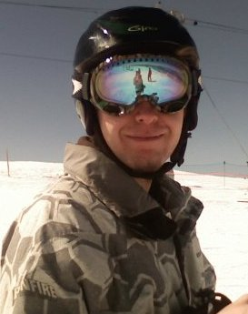

Hello, my name is Jeremy Cerise, and you've apparently stumbled upon my little corner of of the internet.
I'm a hacker, hiker, biker, ski bum, and aspiring Computer Scientist. I dabble in quite a few languages and technologies, and when I'm not doing that, I can be found outside climbing something (or trying to find a quick way down the same). I'm currently spending the summer located in Crested Butte, Colorado, and originally hail from Carbondale, Colorado. I've got a BS in Computer Science from Fort Lewis College in Durango, Colorado.
My primary focuses tend to be web development and mobile application development. I primarily program in Java and PHP, and I've some small experience in C, C++, Python, Haskell, Scala, and other language that strike my fancy from time to time. I love learning new technologies, and I can usually be found reading texts on the latest languages and techniques. I try to learn (or at least become comfortable in) two or three languages every six months or so. I also have more than a passing interest in mathematics, and although I may not be the best at it, it fascinates me to the point where I recklessly pursue it none-the-less.
I also have been known to try my hand at game development occasionaly as well. I've got a couple of projects in development at the momement, one that utilizes Microsofts XNA framework, and another using the excellent LibGDX framework for Android. You can find out more about these and all my projects on Github by following the link at the top of this page.
Thats about all there is to know about (or at least the relevant bits, at any rate). I hope this site is at least moderately helpful in some situations, and somewhat bemusing in the rest. Leave a comment if you have any questions, and enjoy
:wq